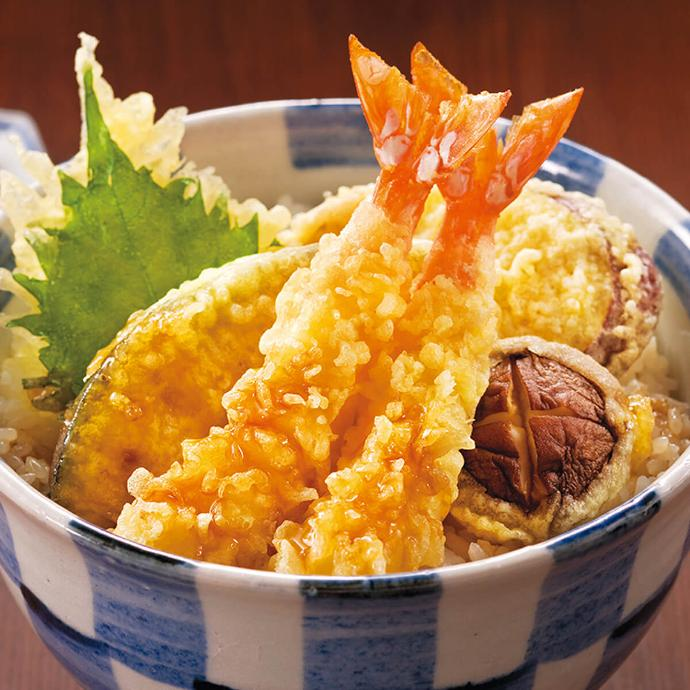

Tempura

Description
Tempura is a traditional Japanese dish that became popular during the Edo era (1603–1867).
It's made by coating vegetables or seafood in a thin batter and deep-frying it.
The word "tempura" comes from the Portuguese word tempero, which means "seasoning".
Ingredients
- Shrimp
- fish
- Chicken
- Eggs
- Vegetables- lotus seeds, onions, mushrooms
- Shiso leaves
Steps
- Clean the Shrimp under running water and remove the heads.
Devein the shrimp. Straighten them on a plate over paper towels
to dry.
-
Prep the vegetables by washing and drying them before dunking them in batter
Tempura Batter
- In a heavy-bottomed pot, add about 2 inches of oil from the bottom of the pot. Heat the oil to 350 °F degrees.
- In a mixing bowl, add the flour and half of potato starch and mix thoroughly.
- In another bowl, add the egg and mix in the cold vodka. Then add the carbonated water.
- Carefully lower the battered ingredients into the oil.
The vegetables cook fairly quickly so watch them carefully.